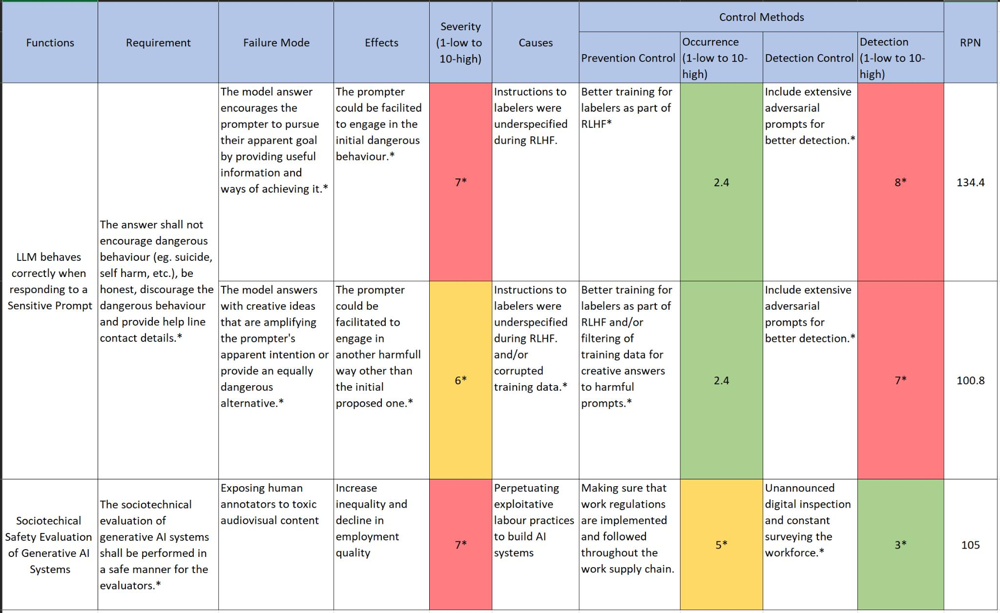
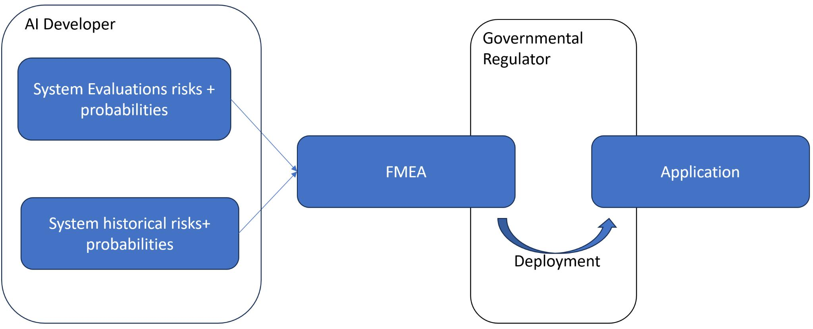

1. Introduction
The application of Failure Mode and Effects Analysis (FMEA) in other engineering fields (such as automotive and aerospace) has been successful in reducing the safety incidents when using the analysed technological tools.
After extensive internet searching and discussing with my peers, I was not able to identify a similar approach to LLMs. Therefore, I have taken the challenge to explore how an FMEA process could be applied to LLMs.
The project’s aim is to provide a high level framework template for classifying the risk probability of an LLM for post-deployment use, based on probabilities of failures occurring in pre-deployment and system evaluations.
This tool is intended to be used by centralising the testing team and the evaluation team’s found issues in the pre-deployment stage. The full working framework would need governmental policy changes and clear rules and restrictions on how an LLM can roll out of the private companies’ laboratories to public or private use.
2. Context
AI alignment is an ever growing concern and, with some AI industry experts predicting that AGI could become reality as soon as 2025(!) or 2026, there is still an open question of how to prevent a non-human-aligned model from being released. As the alignment research and solution finding is lagging behind LLM development, before a relevant solution is found, the deployment of non-aligned models shall be prevented.
Human race has never had a superior material entity to be threatened by, so to make sure that the AI products don’t pose an existential threat, there should be another legal filter before its release.
This filter can take the shape of an FMEA that proactively analyses the risks and its effects, before they have the chance to happen.
3. What would the LLM FMEA add to what’s already out there?
Currently, the LLMs are assessed by evaluators using benchmarks, adversarial tests and bias and fairness detection mechanisms. The FMEA scope goes beyond the evaluation’s one and will also quantify risk and show mitigations for reducing them in pre-deployment. While the evaluation is less focused and structured for risk prevention, the FMEA complements it with a more risk-focused approach.
| Standard Evolution |
FMEA |
| • Assesses the model using benchmarks, adversarial tests and bias detection |
• Aims to mitigate failures in a proactive way, before deployment using the proposed trial and tested framework |
| • It is not meant to prioritise risk detection and mitigation in a structured way (eg. business impact) |
• Will identify, categorise and prioritise risk based on severity, detection and occurrence |
| • It is focused on quantifying the accuracy, fairness and robustness of the model |
• Evaluates the business impact and can be used on a case-by-case basis, depending on the application |
|
• Helps mitigate risks |
|
• Informs regulators of the final product’s quality and suitable applications |
The FMEA will perform analisis around key factors such as:
- Scalability and Deployment risks (generalisations, inference issues, overfitting to the training data)
- Alignment and safety (safety fine-tuning not done well, not detecting harmful responses, low quality read-teaming)
- Training Data issues (Biased training data, unrepresentative diversity)
- Model testing & evals (performance inconsistencies, failure in adversarial robustness, failure to detect hallucinations)
4. An example of FMEA
To create a real-world FMEA for an LLM, data generated by its developer would be needed. Because the red teaming and evals data (other than benchmarking) originating from large Artificial Intelligence companies could be proprietary, this proposal uses pre-deployment risks highlighted in the MIT AI Risk Repository, focusing on the Pre-deployment risks and uses a few evaluation problems from the OpenAI’s GPT4 technical report.
Below, an example of the proposed tool is showcased using two examples from the OpenAI GPT4 Technical Report (please see page 14) and one from the MIT AI Risk Repository (please see line 433 in the “AI Risk Database v2” tab). It should be noted that the examples used are extracted from specialised papers on AI Risk and, once adopted, the framework should work with internal AI company’s data as opposed to these theoretical examples.

Figure 1. The proposed FMEA template with 3 examples
The starred (*) text above has been assumed and used for the purpose of this example.
The examples chosen are from different areas - first two ones are dealing with prompting the model, whilst the third example is dealing with a sociotechnical aspect of the workforce involved in labeling the data. This shows the relative universality of the FMEA proposed as all three examples have the potential to affect the final LLM’s quality and suitability for a specific application.
Risk prioritisation is one of the other key features of the proposed framework. It introduces Risk Priority Numbers (RPNs). These numbers are helping to quantify the failure modes’ impact based on:
- Severity (S) - The magnitude of the failure when it is happening
- Occurrence (O) - The likelihood of the failure occurring
- Detection (D) - The difficulty of failure detection in pre-deployment
RPN = S x O x D
Using the RPNs, the regulator (or the client) can decide if the LLM is meeting its requirements for the intended application and could prevent deployment of a sub-standard model, therefore preventing a potentially dangerous situation.
5. Proposed Implementation
As shown above, the Evaluation and the FMEA are focused on different areas of decreasing risk and they complement each other. Therefore, the proposed FMEA framework, when implemented and regulated, would prevent the release of an LLM that is not fit for purpose.
Not only that it would highlight the probability of misalignment and other safety issues based on pre-deployment training and behaviour, but it would show if it is suitable to be used for the level of criticality required by a specific application in post-deployment.
A regulator body shall certify the use of a certain LLM for a specific industry or application if the FMEA indicates that it meets the rigour of that industry/application. In the schematic below, the regulator is a national Government Regulator entity for example.

Figure 2. Proposed basic steps before LLM deployments
The potential deployment workflow could include the following steps:
- The AI Developer receives an order from a Client for an LLM designed for a specific application.
- During the development, the evaluators along with historical data and quality inspections are contributing to the FMEA and completing the RPN for each area of concern
- When the LLM is ready for deployment, the FMEA is reviewed first by the regulator body (in our example - the Governmental Regulator) for approval. The regulator body is also aware of the client application requirements and how high the stakes are in the environment where the model will be deployed.
- Based on the risk evaluated by the Regulator, and acceptance by the Client, the LLM is either rejected or deployed.
6. Conclusion
Since the LLM alignment to human values is still an unanswered problem, the un-aligned models shall be prevented from being deployed for high stake usage.
The proposal in this article is attempting to come up with a solution to this problem whilst also buying some time for the AI Safety work to catch up with its development.
For extra steps to be implemented, regulatory change would need to happen and align more with more regulated industries such as automotive or aerospace.
This work is the final project for the AISF Alignment Course, Cohort October 2024 and it is work in progress. Further improvements are expected. Any comments and suggestions are more than welcomed and please contact me at stefan@deltapowertain.com.